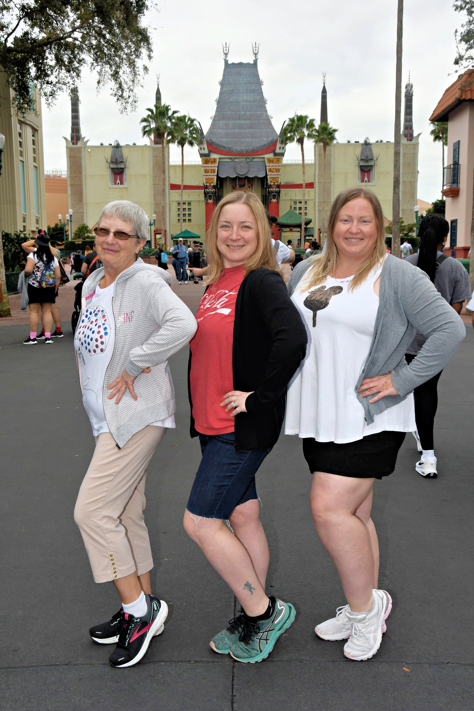
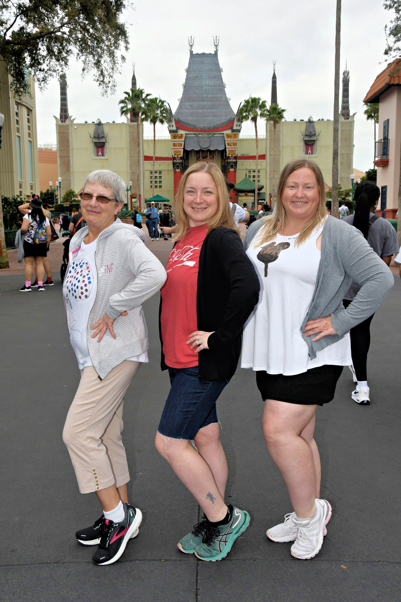
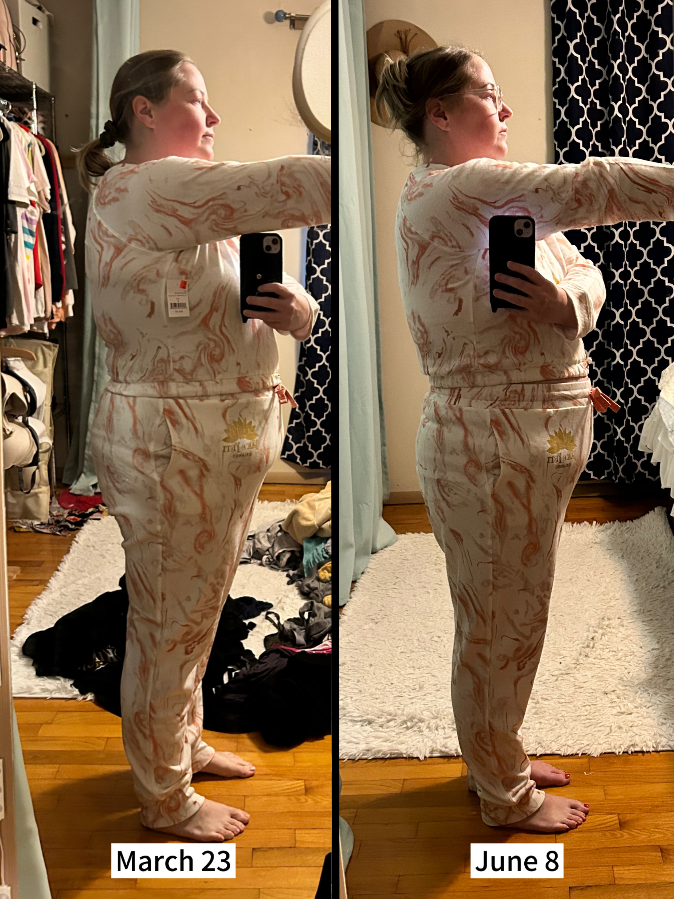
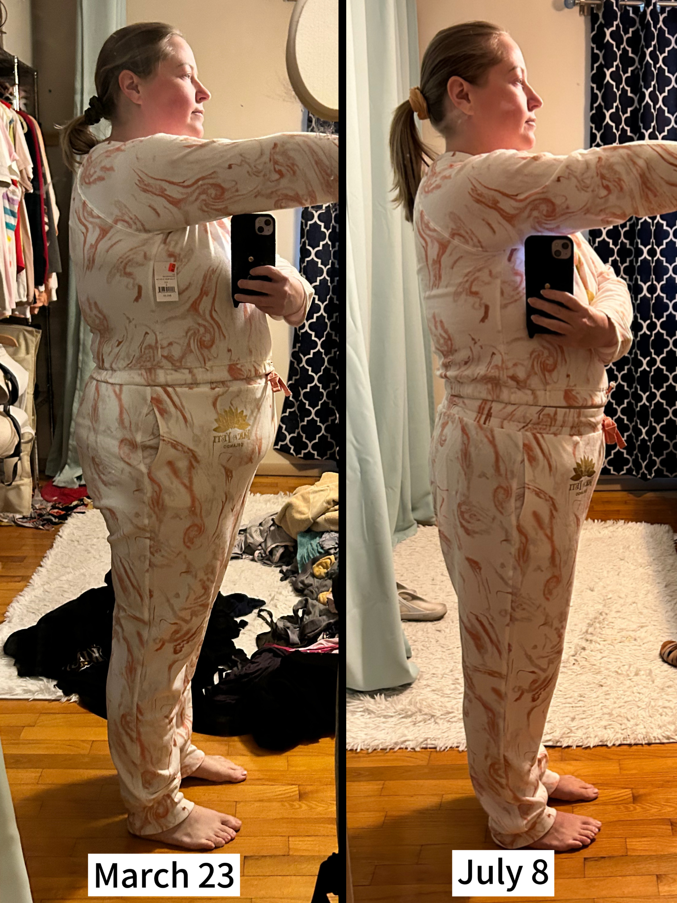
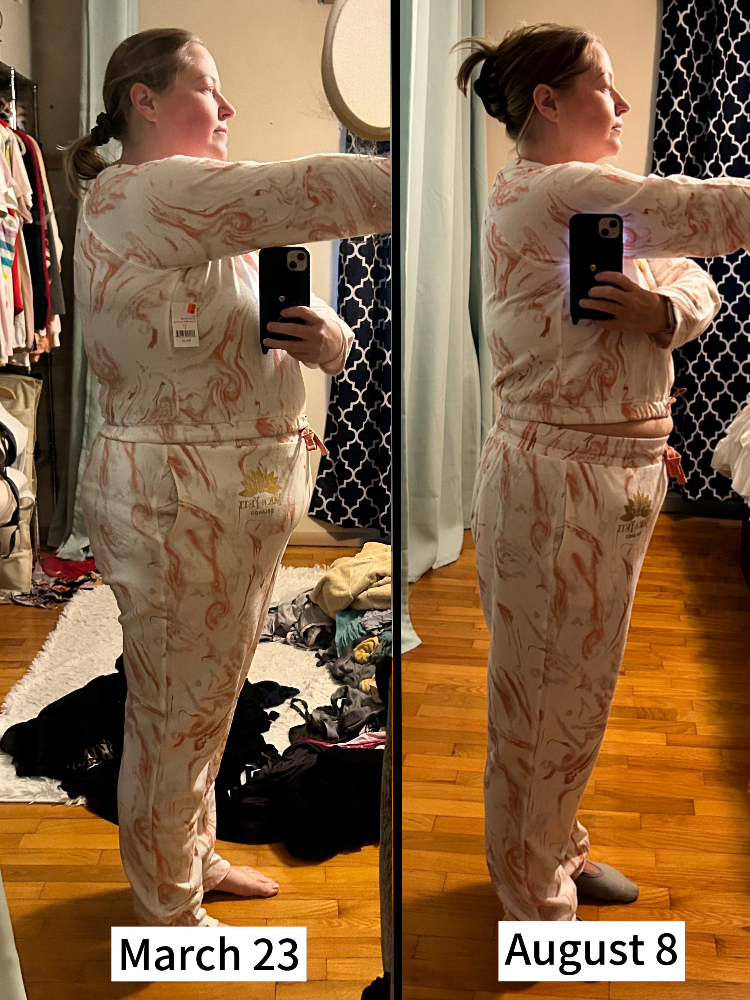
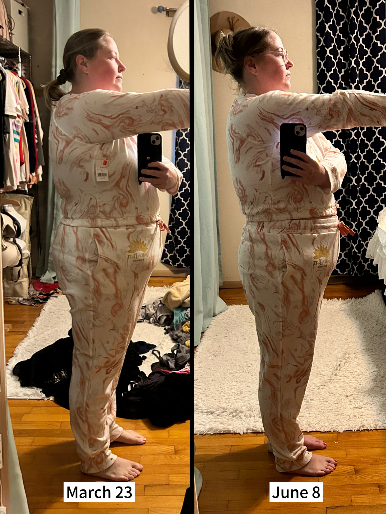
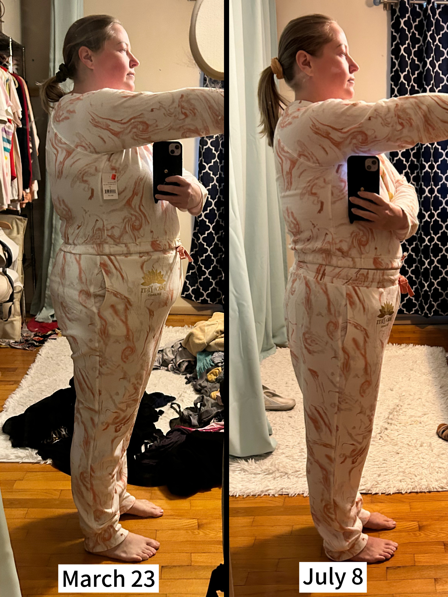
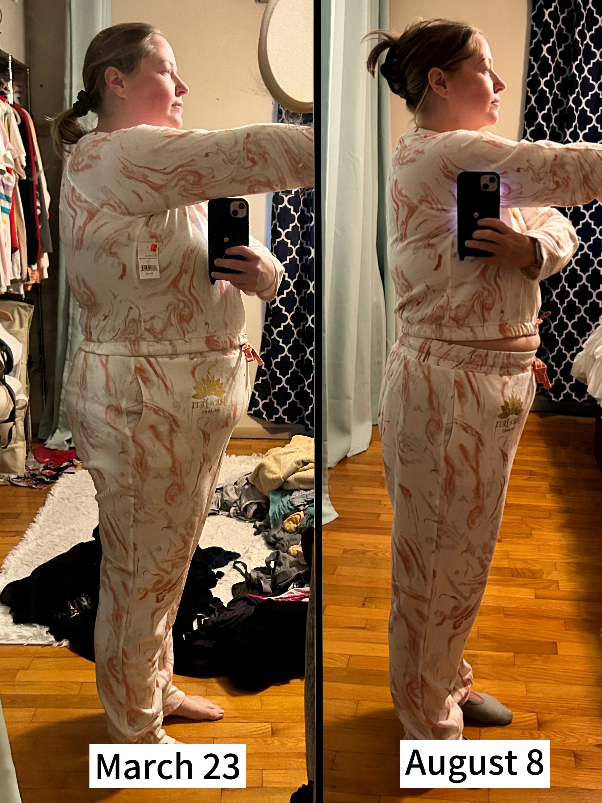

My Journey to Better Health
On March 4, 2024 I entered the operation room at Barnes West County Hospital to undergo the Roux-en-Y Gastric Bypass procedure. I was scared, but I also knew I was up to the challenge.
My Bariatric Team
I chose Washington University for my bariatric program. My surgeon, John Eagon, is one of the top in his field. He attended Harvard Medical School and did his surgical residency at Washington University, as well as a fellowship in digestive diseases at Mayo Clinic.
In addition to Dr. Eagon, I saw a multidisciplinary team, who worked with me to ensure success after surgery. The team included:
While in the hospital following surgery, I was seen by:
Recovery
Physical Changes
The first two weeks saw rapid weight loss of almost 20 pounds. By week three, the losses slowed to between 2-5 pounds per week. I weight each week on Sunday, and I have lost a total of 67 pounds.
Emotional Changes
During pre-surgical education, the team tries their best to prepare you for the influx of emotions you'll experience after surgery, particularly in the 3-6 month range. It's one thing to know it'll happen, it's a complete other thing to actually experience it! Such rapid weight loss has a startling effect on the hormones, many of which are stored in fat. When the weight starts coming off, there's nowhere for these hormones to go except the bloodstream. This leads to frequent mood swings and unexplainable bouts of what feels like mania, interspersed with sadness and sometimes uncontrollable crying. It's frustrating to know what is going on and be powerless to stop it. I've learned to let the emotions come, acknowledge them, and work through them. After all, it's a sign of progress
Medical Changes
In the months since surgery, I've notcied a plethora of improvements, such as:
Transformation
I have been taking frequent pictures to remind myself of how far I've come on this journey
Before Surgery
 
 
After Surgery
   
  